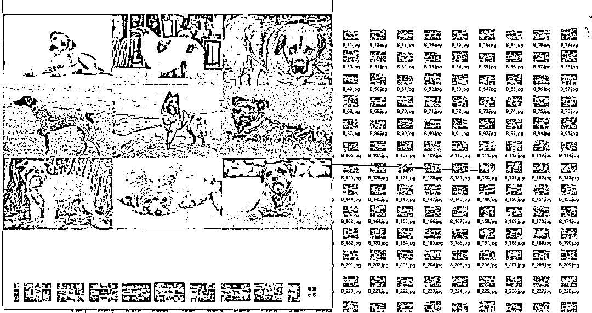
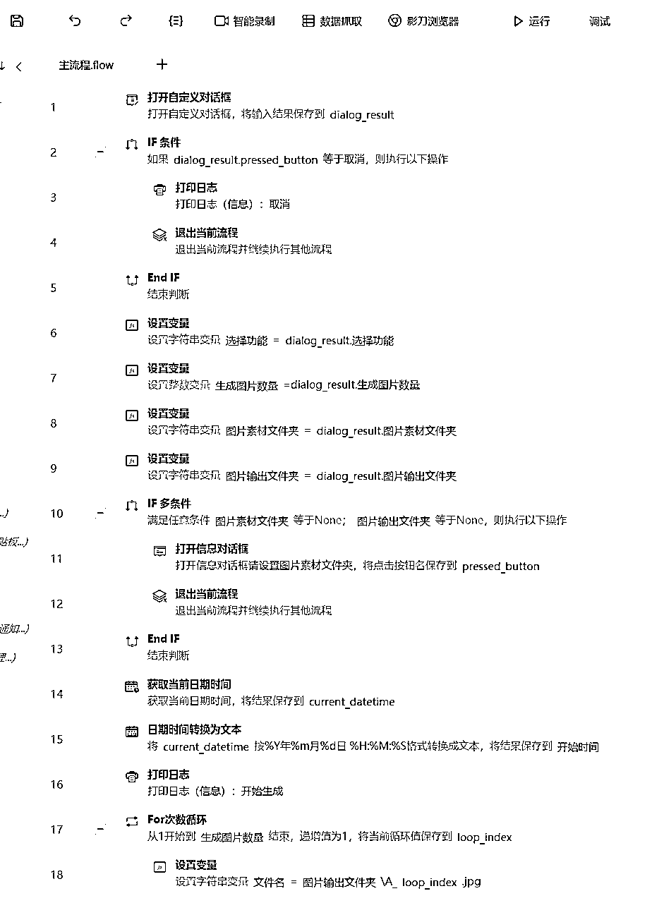
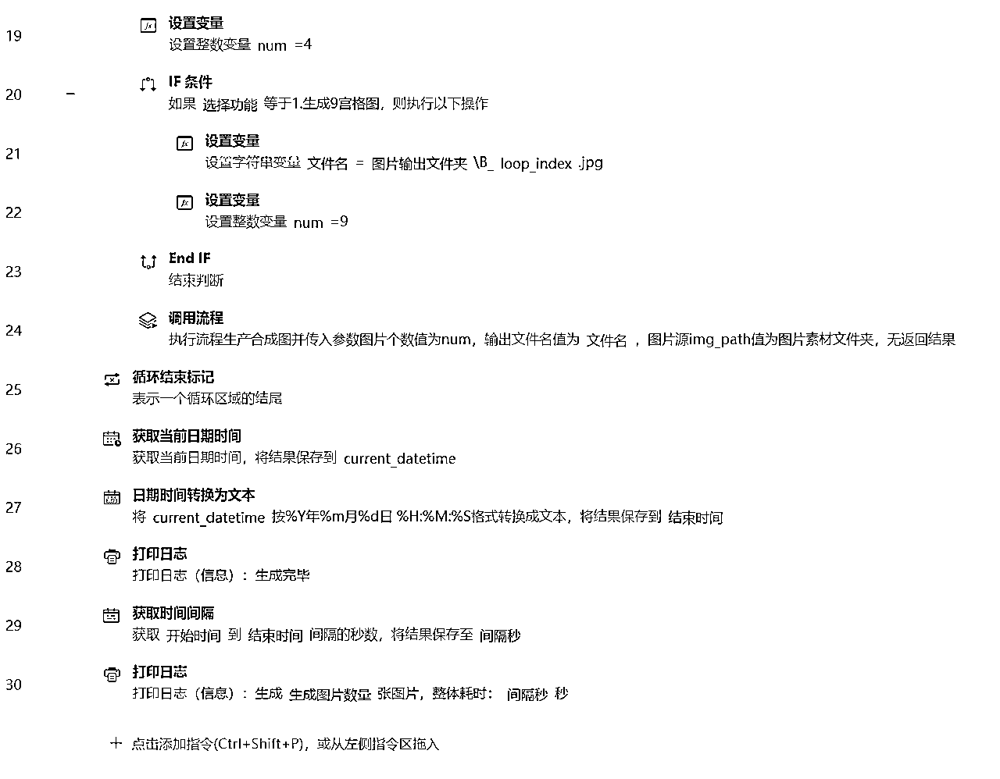
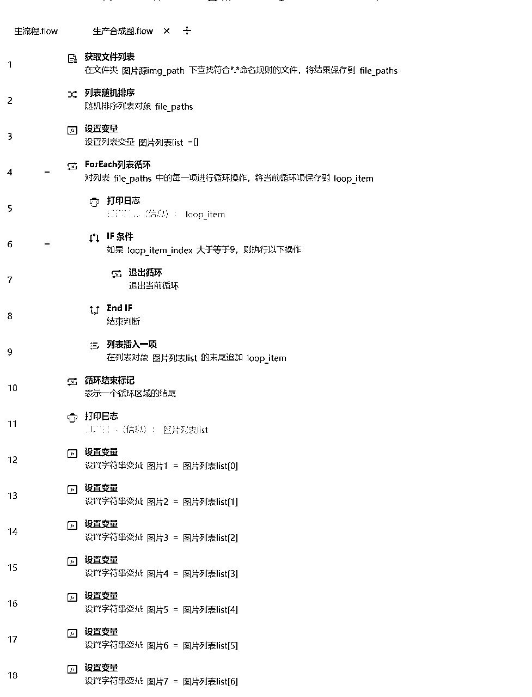
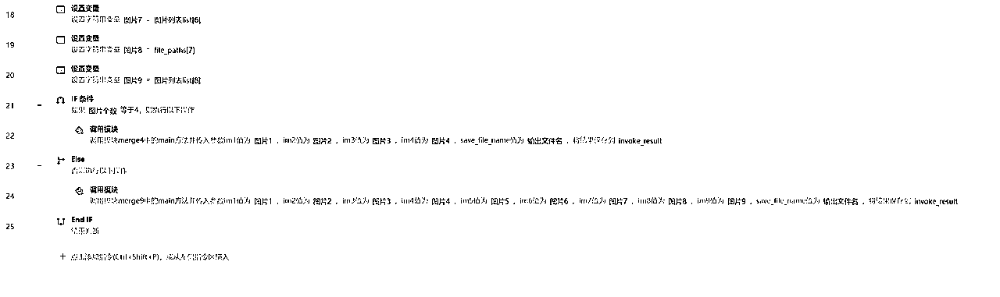

来源：https://kwut14otear.feishu.cn/docx/A6BodL8NkoxMdAxgaHVcGHFcnhd
一、机器人介绍
名称：免PS批量合成4或9宫格图片RPA机器人
作用：
1.快速从指定文件夹中随机提取图片素材
2.合成4宫格或9宫格图片，适用于自媒体矩阵内容制作
3.大幅提升图片编辑效率，节省人力成本
生成效果：

二、准备
软件：影刀RPA软件
官网：www.yingdao.com
三、流程
1.选择素材文件夹
2.设置合成宫格模式（4宫格或9宫格）
3.启动合成程序
4.机器人自动完成图片提取与合成
5.检查并导出最终图片
四、实现代码
主流程


生成合成图流程


4宫格图片合成python代码
# 使用提醒:
# 1. xbot包提供软件自动化、数据表格、Excel、日志、AI等功能
# 2. package包提供访问当前应用数据的功能，如获取元素、访问全局变量、获取资源文件等功能
# 3. 当此模块作为流程独立运行时执行main函数
# 4. 可视化流程中可以通过"调用模块"的指令使用此模块
# 如果有需要技术支持，可以联系 v pin9108
from PIL import Image
def main(im1, im2, im3, im4, save_file_name):
# 打开四张图片
im1 = Image.open(im1)
im2 = Image.open(im2)
im3 = Image.open(im3)
im4 = Image.open(im4)
# 获取图片的最小宽度和最小高度
widths = [im1.width, im2.width, im3.width, im4.width]
heights = [im1.height, im2.height, im3.height, im4.height]
min_width = min(widths)
min_height = min(heights)
# 缩放和居中对齐图片
im1 = resize_and_center(im1, min_width, min_height)
im2 = resize_and_center(im2, min_width, min_height)
im3 = resize_and_center(im3, min_width, min_height)
im4 = resize_and_center(im4, min_width, min_height)
# 创建一个新的图片，大小为四张图片的尺寸的两倍
new_im = Image.new('RGB', (min_width * 2, min_height * 2))
# 将四张图片按顺序粘贴在新的图片上
new_im.paste(im1, (0, 0))
new_im.paste(im2, (min_width, 0))
new_im.paste(im3, (0, min_height))
new_im.paste(im4, (min_width, min_height))
# 保存新的图片
new_im.save(save_file_name)
def resize_and_center(im, width, height):
# 缩放图片以适应给定的宽度和高度
im = im.resize((width, height))
# 创建一个新的白色背景图片，大小为给定的宽度和高度
bg_im = Image.new('RGB', (width, height), 'white')
# 将原始图片居中对齐到新的白色背景图片上
left = (width - im.width) // 2
top = (height - im.height) // 2
bg_im.paste(im, (left, top))
return bg_im
9宫格图片合成python代码
# 使用提醒:
# 1. xbot包提供软件自动化、数据表格、Excel、日志、AI等功能
# 2. package包提供访问当前应用数据的功能，如获取元素、访问全局变量、获取资源文件等功能
# 3. 当此模块作为流程独立运行时执行main函数
# 4. 可视化流程中可以通过"调用模块"的指令使用此模块
# 如果有需要技术支持，可以联系 v pin9108
from PIL import Image
def main(im1, im2, im3, im4, im5, im6, im7, im8, im9, save_file_name):
# 打开九张图片
im1 = Image.open(im1)
im2 = Image.open(im2)
im3 = Image.open(im3)
im4 = Image.open(im4)
im5 = Image.open(im5)
im6 = Image.open(im6)
im7 = Image.open(im7)
im8 = Image.open(im8)
im9 = Image.open(im9)
# 获取图片的最小宽度和最小高度
widths = [im1.width, im2.width, im3.width, im4.width, im5.width, im6.width, im7.width, im8.width, im9.width]
heights = [im1.height, im2.height, im3.height, im4.height, im5.height, im6.height, im7.height, im8.height, im9.height]
min_width = min(widths)
min_height = min(heights)
# 缩放和居中对齐图片
im1 = resize_and_center(im1, min_width, min_height)
im2 = resize_and_center(im2, min_width, min_height)
im3 = resize_and_center(im3, min_width, min_height)
im4 = resize_and_center(im4, min_width, min_height)
im5 = resize_and_center(im5, min_width, min_height)
im6 = resize_and_center(im6, min_width, min_height)
im7 = resize_and_center(im7, min_width, min_height)
im8 = resize_and_center(im8, min_width, min_height)
im9 = resize_and_center(im9, min_width, min_height)
# 创建一个新的图片，大小为三倍的原图尺寸（3x3）
new_im = Image.new('RGB', (min_width * 3, min_height * 3))
# 将九张图片按顺序粘贴在新的图片上
new_im.paste(im1, (0, 0))
new_im.paste(im2, (min_width, 0))
new_im.paste(im3, (min_width * 2, 0))
new_im.paste(im4, (0, min_height))
new_im.paste(im5, (min_width, min_height))
new_im.paste(im6, (min_width * 2, min_height))
new_im.paste(im7, (0, min_height * 2))
new_im.paste(im8, (min_width, min_height * 2))
new_im.paste(im9, (min_width * 2, min_height * 2))
# 保存新的图片
new_im.save(save_file_name)
def resize_and_center(im, width, height):
# 缩放图片以适应给定的宽度和高度
im = im.resize((width, height))
# 创建一个新的白色背景图片，大小为给定的宽度和高度
bg_im = Image.new('RGB', (width, height), 'white')
# 将原始图片居中对齐到新的白色背景图片上
left = (width - im.width) // 2
top = (height - im.height) // 2
bg_im.paste(im, (left, top))
return bg_im